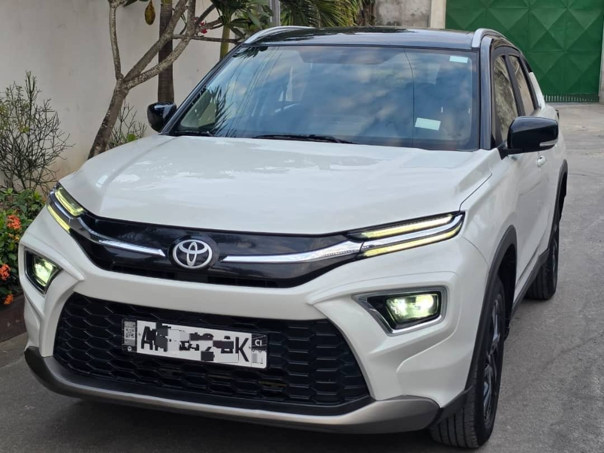

À vendre
Toyota Urban Cruiser 2023
2023 · 4 cylindres · Environ 51 000 km · Cocody
14 900 000 FCFA
Année2023
Kilométrage annoncéEnviron 51 000 km
Cylindres4
Puissance fiscale9 CV
DémarrageStart/Stop
ClimatisationD’origine
Caméra de reculOui
AudioRadio · USB · Bluetooth
VolantMultifonctions
VitresÉlectriques
SiègesTissu
DocumentsÀ jour
PositionCocody
Prix légèrement négociable.
Démarrage Start/Stop, caméra de recul, radio USB et Bluetooth, volant multifonctions, vitres électriques, rétroviseurs avec clignotants et verrouillage par contact annoncé. Sièges en tissu, intérieur très propre et documents à jour.
Véhicule situé à Cocody. Contactez TVB CI AUTO pour les informations et une visite.